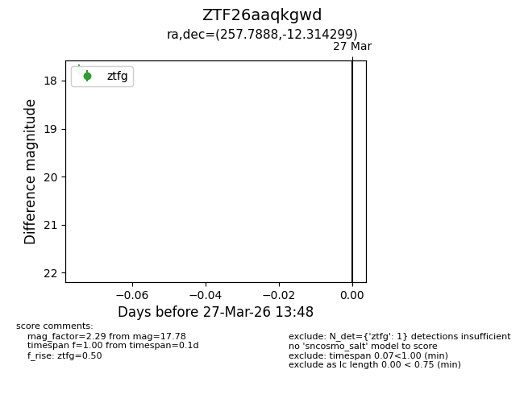
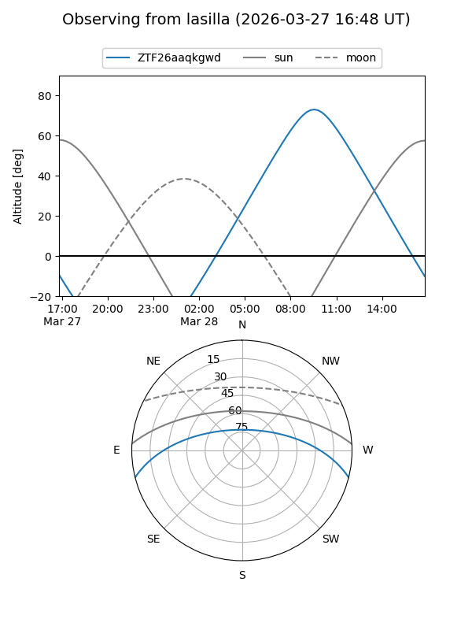
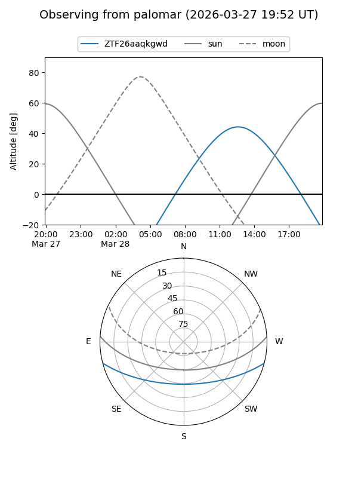

ZTF26aaqkgwd
Target ZTF26aaqkgwd at 2026-03-27 13:50
Aliases and brokers:
FINK: link
Lasair: link
ALeRCE: link
alt names
ZTF26aaqkgwd (ztf,fink_ztf)
Coordinates:
equatorial (ra, dec) = 257.7888,-12.31430
equatorial (HMS+DMS) = 17:11:09.31,-12:18:51.47
galactic (l, b) = (9.7705,+15.73533)
Flags:
Photometry:
last ztfg=17.78
1 ztfg detections
Lightcurve

Visibility


Additional plots